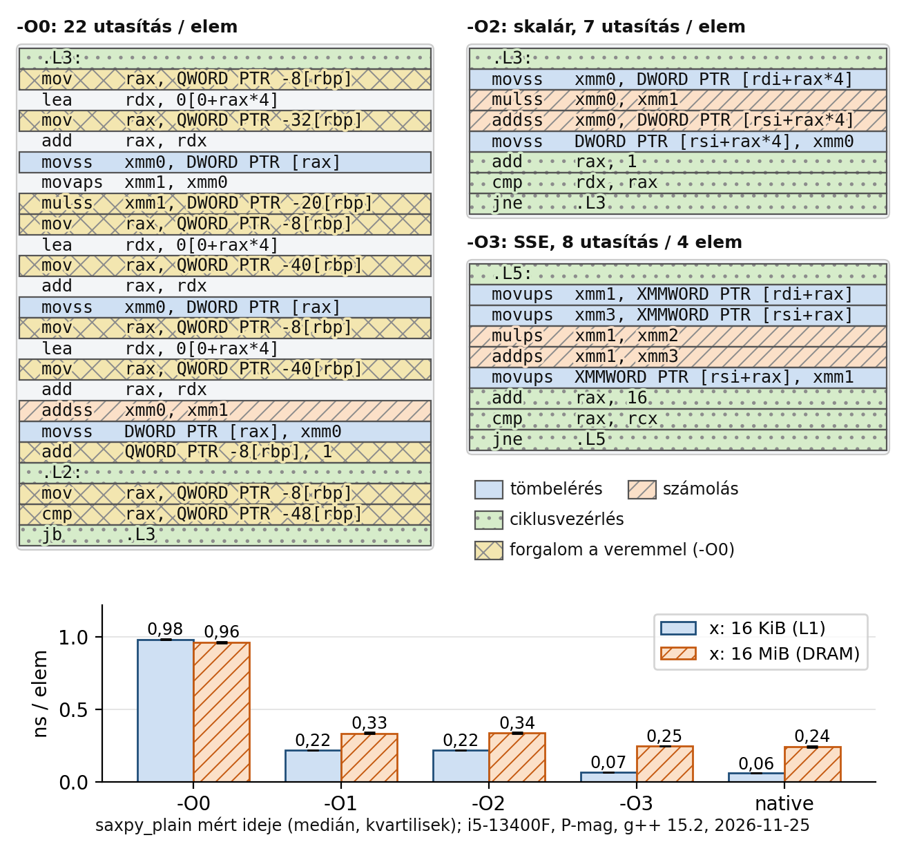
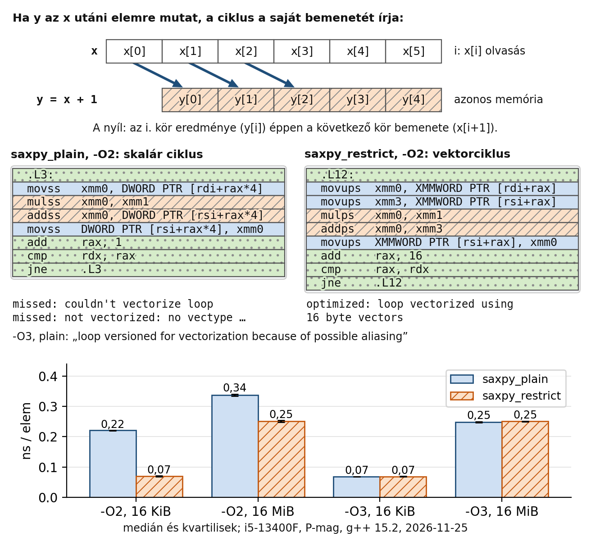

Fordítsd le ugyanazt a háromsoros saxpy függvényt
ötféleképpen. A könyv mérőgépén (i5-13400F, P-mag, g++ 15.2, 2026-11-25)
egy tömbelem feldolgozása -O0 mellett 0,98 ns,
-O2 mellett 0,22 ns, -O3 -march=native mellett
0,061 ns, ha az adat elfér az L1 cache-ben. A forráskód betűre azonos, a
leggyorsabb változat mégis tizenhatszor gyorsabb a leglassabbnál. A
különbség teljes egészében a generált utasításokban van, ezért aki a
programja sebességét érteni akarja, annak el kell tudnia olvasni a
fordító kimenetét. Ehhez nem kell assemblyben programozni: elég néhány
visszatérő mintát felismerni.
Egy optimalizált függvény assemblyje elsőre zsúfolt: bevezető ellenőrzések, a fő ciklus, maradékkezelő kód. A jó olvasási sorrend: keresd meg a függvényt, benne a legbelső ciklust (egy visszafelé mutató feltételes ugrás zárja), és csak ezt elemezd. A ciklusban négyféle utasítás fordul elő: tömbolvasás és -írás, számolás, ciklusvezérlés, és néha forgalom a veremmel.

Figyeld meg a bal oldali listát: a 22 utasításból 10 a veremmel
forgalmaz, és az i ciklusváltozót a kód körönként ötször
olvassa a memóriából. Az -O2 ciklus 7 utasítás, memóriát
csak a tömbökhöz használ. Az -O3 ciklus majdnem ugyanilyen
hosszú, de egy körben négy elemet dolgoz fel. Az alsó diagram azt is
mutatja, hogy nagy tömbön (16 MiB) a gyorsítás sokkal kisebb: ott a
memória a szűk keresztmetszet.
A laborgép x86-64 processzor. A fordító kimenetét a
g++ -S -masm=intel kapcsolópárral
Intel-szintaxisban kérjük, mert benne – akárcsak a
RISC-V-n – a célregiszter áll elöl:
rax, rbx, …, rsp,
r8–r15); az alsó 32 bit neve eax,
edi, r8d stb. A
xmm0–xmm15 128 bites, a ymm 256
bites vektorregiszter.DWORD PTR [rsi+rax*4] egy 4 bájtos érték az
rsi + 4·rax címen. Egy aritmetikai utasítás közvetlenül
memóriából is olvashat (addss xmm0, DWORD PTR [rsi+rax*4]),
ami RISC-V-n két utasítás lenne.rdi, rsi,
rdx, rcx, r8, r9; a
lebegőpontosak xmm0-tól; az eredmény rax-ban
vagy xmm0-ban. Ez ugyanaz az elv, mint a Hívási konvenció, verem és veremkeret
alfejezetben, más regiszternevekkel.ss = skalár
float, ps = több csomagolt (packed)
float; v előtag = AVX-kódolás;
fmadd = összevont szorzás-összeadás (FMA).Az eszközök egy része (például az objdump
alapértelmezése) AT&T-szintaxist használ. Egyszer
érdemes felismerni: a regiszterek % jelet kapnak, a sorrend
forrás–cél, a méret a mnemonik végén van. Ugyanaz az utasítás Intel- és
AT&T-alakban:
add eax, DWORD PTR [rdi] # Intel: eax += M[rdi]
addl (%rdi), %eax # AT&T: ugyanaz| Kapcsoló | Mit csinál (GCC) | Mire jó |
|---|---|---|
-O0 |
minden változó a veremben, utasításonként a forrás szerint | hibakeresés |
-O1 |
regiszterkiosztás, alapvető egyszerűsítések | gyors fordítás, olvasható kód |
-O2 |
teljes skalár optimalizálás, óvatos autovektorizálás | alapértelmezett kiadási szint |
-O3 |
agresszívebb inline-olás, ciklusátalakítás, vektorizálás | számításigényes ciklusok |
-march=native |
a fordítógép utasításkészlete (pl. AVX2, FMA) | csak azonos processzorcsaládra |
-fno-tree-vectorize |
a ciklusvektorizáló kikapcsolása | kontrollkísérlet |
A -O2 is vektorizál, de „nagyon olcsó” költségmodellel;
az -O3 vállal ellenőrző kódot és több maradékkezelőt is. A
viselkedés fordítóverziónként változhat, ezért mindig a saját
kimenetedet nézd meg. A -fno-tree-vectorize azért hasznos
kontroll, mert ha egy gyorsulás eltűnik nélküle, akkor a vektorizálásból
származott.
Definíció. Indukciós változó az a
ciklusváltozó (vagy abból lineárisan származtatott érték), amely
körönként állandóval változik. Az -O2 ciklusban a
rax az indukciós változó: add rax, 1, a
feltétel cmp rdx, rax és jne. Az
-O3 ciklusban a rax bájtban lép 16-ot.
Definíció. Ciklusinvariáns az a számítás, amelynek eredménye minden körben ugyanaz; a fordító a ciklus elé emeli. Erőcsökkentés (strength reduction): drága művelet (szorzás, osztás) helyettesítése olcsóbbal (összeadás, eltolás). Kiömlesztés (spill): ha több élő érték van, mint regiszter, a fordító egyeseket átmenetileg a verembe ír.
Néhány minta egyetlen apró függvényen látszik: a
a[3 * i] += k * k + 1 ciklusban a k * k + 1
kikerül a ciklus elé, a 3 * i szorzásból mutatóléptetés
lesz (12 bájt/elem), a GCC pedig kettesével görgeti a
ciklust, így a lépés 24 bájt (lásd a Kód szakaszt). Konstanssal való
osztásból „bűvös számmal” szorzás és eltolás lesz. Az inline-olt
függvény call nélkül, a törzsbe olvasztva jelenik meg.
A vektorizálás jelei az utasításkészletek között:
| ISA | vektoros betöltés | vektoros FMA / szorzás | megjegyzés |
|---|---|---|---|
| x86-64 SSE/AVX | movups, vmovups ymm |
mulps, vfmadd213ps |
futtatott kimenet |
| AArch64 NEON | ld1 {v0.4s}, [x0], #16 |
fmla v1.4s, v0.4s, v2.4s |
nem futtatott példa |
| RISC-V V | vle32.v v0, (a1) |
vfmacc.vf v1, fa0, v0 |
nem futtatott példa |
A tanulság közös: a vektorciklus egy körben több elemet léptet, és a utasításnevek jelzik a csomagolt adatot. A vektorutasításokat részletesen az AVX és NEON a gyakorlatban alfejezet tárgyalja.
A fordító jelentése (-fopt-info-vec a
sikeres, -fopt-info-vec-missed a sikertelen
vektorizálásokra) gyors tájékozódás, de nem helyettesíti az assemblyt.
Lebegőpontos összegzésnél az -O3 jelentése vektorizált
ciklust ír, a ciklusban mégis négy skalár addss áll sorban:
a fordító nem rendezheti át az összeadásokat, mert a lebegőpontos
összeadás nem asszociatív (Számábrázolás
gépközelből). Csak -ffast-math mellett lesz belőle
valódi addps.
Továbbvitt eredmény. Egy optimalizált ciklus olvasásakor sorra azonosítjuk: a visszaugrással zárt törzset, az indukciós változót, a betöltéseket és tárolásokat, a számoló utasításokat, a körönként feldolgozott elemszámot és a veremforgalmat. Ezekkel a mintákkal olvassuk a három ISA kódját (RISC-V, AArch64 és x86-64 összevetése), az utasításszintű párhuzamosság függőségeit (ILP, függőségek és statikus ütemezés), a SIMD-kódot (AVX és NEON a gyakorlatban) és az optimalizálási esettanulmányt (Esettanulmány: mérésvezérelt optimalizálás).
Miért nem vektorizálta az -O2 a saxpy-t? A
C++ szerint az x és y mutató átfedhet. Ha
például y = x + 1, akkor az y[i] írás éppen a
következő kör x[i+1] bemenetét módosítja; négy elemet
egyszerre beolvasva a vektorciklus a régi értékekkel számolna, és más
eredményt adna. Ezt hívjuk aliasingnak: két név
ugyanarra a memóriára mutat.

A diagramon a __restrict-es változat -O2
alatt kis tömbön 3,2-szer gyorsabb (0,221 helyett 0,069 ns/elem),
-O3 alatt viszont a két változat egyforma. A
__restrict (C-ben restrict) a programozó
ígérete: az így jelölt mutatón elért adatot a függvény
futása alatt más mutatón át nem éri el, ha írás is történik. Ígéret
nélkül az -O3 (vagy a -fvect-cost-model=cheap)
futásidejű ellenőrzést szúr a ciklus elé, és két változatot generál
(verziózás):
lea rax, -4[rsi] # rsi = y, rdi = x
sub rax, rdi # rax = y - x - 4 (előjel nélkül nézve)
cmp rax, 8
jbe .L12 # 4 <= y - x <= 12 bájt: skalár ciklusAz ellenőrzés csak akkor választja a lassú ágat, ha az átfedés
valóban elrontaná a négyes vektort; az y = x eset (helyben
számolás) biztonságos, mert minden elem a saját helyét írja. A
__restrict megszegése viszont definiálatlan viselkedés, és
a következmény látható is (lásd a Kód szakaszt).
Továbbvitt eredmény. A lehetséges aliasing
megakadályozza vagy drágítja a vektorizálást; a __restrict
ígéret ezt feloldja (a mérőgépen -O2 alatt, L1-ben
3,2-szeres gyorsulás), de hamis ígéret csendes hibát okoz. Az AVX és NEON a gyakorlatban alfejezet erre
épít.
A vasegyenlet (, Végrehajtási idő, CPI és a vasegyenlet) elemre vetítve megmutatja, hogy az utasításszám nem magyaráz mindent. A mérőprogram becsült órajele kb. 4,58 GHz, tehát ns. A ciklusok száma elemenként , a .
| változat | / elem | (ns) | / elem | CPI |
|---|---|---|---|---|
-O0 |
22 | 0,981 | 0,20 | |
-O2 skalár |
7 | 0,221 | 1,01 | 0,14 |
-O3 SSE |
0,069 | 0,32 | 0,16 |
Két megfigyelés. Az -O0 → -O2 váltásnál az
utasításszám
-szeresére,
az idő viszont
-szeresére
csökken: a CPI is javult. Az -O0 ciklusban az
i a memóriában él, ezért minden kör várja az előző kör
tárolását, majd betöltését (ez a tárolás–betöltés továbbítás, lásd Memóriafüggőségek: load/store queue és
függőségbecslés). Az -O2 → -O3 váltásnál
-szer
kevesebb utasítás, és
-szeres
gyorsulás: a vektoros kör valamivel több ciklust igényel utasításonként.
Az 1-nél jóval kisebb CPI a szuperskalár végrehajtás jele: a mag
ciklusonként több utasítást fejez be. Ezek becslések, mert az órajelet a
program közvetve becsli.
16 MiB-os
(és ugyanekkora
)
esetén a kép más: elemenként 12 bájt mozog (olvasás
-ből
és
-ból,
írás
-ba).
Az -O3 0,249 ns/elem értéke
GB/s adatforgalmat jelent. Itt a memória sávszélessége korlátoz (A roofline-modell), ezért a vektorizálás a skalár
-O2 változathoz képest már csak
-szörös
gyorsulást hoz.
Az archkit.asmview a helyi g++-t hívja,
kivágja a függvényt és a ciklusokat. A mérőprogram
(code/bench/bench_saxpy.cpp) két függvényét vizsgáljuk:
import sys; sys.path.insert(0, "code")
from archkit import asmview, perf
forras = open("code/bench/bench_saxpy.cpp", encoding="utf-8").read()
mag = forras[forras.index("__attribute__((noinline)) void saxpy_plain"):
forras.index("// Redukció")]
SRC = "#include <cstddef>\n" + mag.replace("__attribute__((noinline))",
'extern "C" __attribute__((noinline))')
for kapcsolo in ["-O2", "-O3"]:
print(f"== {kapcsolo}")
for sor in asmview.report(SRC, (kapcsolo,)):
print(" ", sor.split(": optimized: ")[1].strip())== -O2
loop vectorized using 16 byte vectors
== -O3
loop vectorized using 16 byte vectors
loop versioned for vectorization because of possible aliasing
loop vectorized using 8 byte vectors
loop vectorized using 16 byte vectors
loop vectorized using 8 byte vectorsAz -O2 alatt csak egy ciklus (a
__restrict-es) lett vektoros; az -O3
mindkettőt vektorizálja, az elsőt verziózva, és a maradékra 8 bájtos
vektort is használ. A minták egy apró példán:
PATT = """extern "C" void scale(int* a, long n, int k) {
for (long i = 0; i < n; ++i) a[3 * i] += k * k + 1;
}
extern "C" int div10(int x) { return x / 10; }
"""
asm = asmview.compile_asm(PATT, ("-O2",))
elotte = asmview.function(asm, "scale")
print("ciklus előtt:", [s for s in elotte if s.startswith(("imul", "add edx"))])
for sor in asmview.loops(elotte)[0][1]:
print(sor)
print("div10:", "; ".join(" ".join(s.split()) for s in asmview.function(asm, "div10")[1:]))ciklus előtt: ['imul edx, edx', 'add edx, 1']
.L3:
add DWORD PTR [rdi], edx
add DWORD PTR 12[rdi], edx
add rdi, 24
cmp rdi, rax
jne .L3
div10: movsxd rax, edi; sar edi, 31; imul rax, rax, 1717986919; sar rax, 34; sub eax, edi; retA k * k + 1 a ciklus előtt egyszer számolódik ki
(imul, add), a ciklusban nincs szorzás, a
mutató 24 bájtot lép (két elem), és a 10-zel osztás szorzás és eltolás.
Végül a hamis ígéret ára: a függvényt átfedő tömbbel hívjuk.
import pathlib, subprocess, tempfile
ALIAS = """#include <cstddef>
#include <cstdio>
__attribute__((noinline)) void plain(float a, const float* x, float* y, std::size_t n) {
for (std::size_t i = 0; i < n; ++i) y[i] = a * x[i] + y[i];
}
__attribute__((noinline)) void restr(float a, const float* __restrict x, float* __restrict y,
std::size_t n) {
for (std::size_t i = 0; i < n; ++i) y[i] = a * x[i] + y[i];
}
int main() {
float p[9], q[9];
for (int i = 0; i < 9; ++i) p[i] = q[i] = 1.0f;
plain(1.0f, p, p + 1, 8); // y = x + 1: megengedett
restr(1.0f, q, q + 1, 8); // a __restrict ígéret megszegése
for (float v : p) std::printf("%g ", v);
std::printf("\\n");
for (float v : q) std::printf("%g ", v);
}
"""
with tempfile.TemporaryDirectory() as d:
pathlib.Path(d, "a.cpp").write_text(ALIAS)
for opt in ["-O0", "-O2"]:
subprocess.run(["g++", "-std=c++20", opt, "a.cpp", "-o", "a"], cwd=d, check=True)
ki = subprocess.run(["./a"], cwd=d, capture_output=True, text=True).stdout
print(f"{opt}:\n plain: {ki.splitlines()[0]}\n restr: {ki.splitlines()[1]}")-O0:
plain: 1 2 3 4 5 6 7 8 9
restr: 1 2 3 4 5 6 7 8 9
-O2:
plain: 1 2 3 4 5 6 7 8 9
restr: 1 2 2 2 2 3 2 2 2Nincs fordítási hiba, figyelmeztetés vagy összeomlás: a
__restrict-es változat -O2 alatt csendben más
számot ad. Ez a definiálatlan viselkedés jellemző alakja, és más
fordítóverzión más lehet.
code/bench/
mappa bench_saxpy.cpp fájlját a
-std=c++20 -O2 -S -masm=intel kapcsolókkal, majd
-O3-mal is. Keresd meg a saxpy_plain függvény
visszaugró ciklusait (a nevek C++-ban „torzítottak”, a
c++filt visszaalakítja).-fopt-info-vec kapcsolóval, majd a
-fno-tree-vectorize hozzáadásával. Melyik jelentés tűnik
el, és mi történik a ciklussal?make -C code/bench, majd
code/bench/build/bench_saxpy --sizes 16,16384 --kernels saxpy_plain,saxpy_restrict;
ismételd make -B -C code/bench CXXFLAGS='-O3 -std=c++20'
után. A te géped arányai eltérhetnek; a kérdés az, hogy a kis és a nagy
tömbnél ugyanazt a mintát látod-e.scale függvényt a Compiler Explorerbe
[S-GODBOLT], és válts RISC-V vagy AArch64 fordítóra. Hogyan jelenik meg
az erőcsökkentés ott?-O0 alatt készült, ahol a veremforgalom uralkodik.
Javítás: mérni csak a kiadási kapcsolókkal.__restrict hozzáadása után
néhány hívási helyen rossz az eredmény. Ok: ott a
tömbök átfednek. Javítás: a __restrict
csak garantáltan független tömbökre; különben hagyd, hogy a fordító
verziózzon.bench::do_not_optimize, és ellenőrzőösszeg (Benchmarkolás: mérni tanulni).addss és az addps
utasítás között?-O0 kód, ha ugyanazokat a számításokat
végzi?saxpy a ciklus előtt, és
miért nem gond az y = x eset?-ffast-math nélkül a
float összegzést teljesen?-O2 saxpy
ciklusban nevezd meg az indukciós változót, a betöltéseket, a tárolást,
a számolást és a ciklusvezérlést. Hány bájtot olvas és ír egy kör?div10 kódját
és
bemenetre
().lea rax, -4[rsi]; sub rax, rdi; cmp rax, 24; jbe skalar.
Milyen
bájtkülönbségre fut a skalár ág? Mi történik
,
elem és
elem esetén?-O1 és -O3 mellett 16 KiB-ra és 16
MiB-ra. Mit mond az arány a szűk keresztmetszetről?float összegző ciklust,
fordítsd -O3 és -O3 -ffast-math alatt, és
számold meg a ciklusban az addss és addps
utasításokat. Magyarázd meg, miért kaphatsz eltérő eredményt a két
változatból.-O2 -fno-tree-vectorize alatt, és számold meg a
ciklus veremhozzáféréseit. Hol kezdődik a kiömlesztés, és miért
ott?A fordító kimenetét a legbelső, visszaugrással zárt cikluson
olvassuk: indukciós változó, betöltések, számolás, tárolások, vezérlés
és veremforgalom. Az optimalizálás regiszterbe emeli a változókat,
kiemeli a ciklusinvariánsokat, erőcsökkent, görget és vektorizál
(ps utótag, ymm regiszterek). A fordítói
jelentés tájékoztat, de az assembly dönt. A lehetséges aliasing miatt a
fordító nem vagy csak futásidejű ellenőrzéssel vektorizál; a
__restrict ígéret -O2 alatt a mérőgépen
3,2-szeres gyorsulást adott, hamisan viszont csendes hibát. A mért idő a
vasegyenlettel, nagy adaton pedig a memória sávszélességével
magyarázható.
jne .L3) végződik.addss egyetlen float-ot ad össze, az
addps a vektorregiszter minden sávját (128 biten
négyet).Indukciós változó: rax (add rax, 1).
Betöltés: movss xmm0, [rdi+rax*4]
(),
és az addss xmm0, [rsi+rax*4] memóriaoperandusa
().
Számolás: mulss, addss. Tárolás:
movss [rsi+rax*4], xmm0. Vezérlés: add,
cmp, jne. Egy kör 8 bájtot olvas és 4 bájtot
ír.
:
;
,
és
(mert
).
Az edi az sar edi, 31 után 0, az eredmény 10.
:
a szorzat negatív, az aritmetikai eltolás lefelé kerekít,
-et
ad; a sar az edi-ből
-et
csinál, és
.
A korrekció a C++ nulla felé kerekítő osztását állítja helyre.
Előjel nélküli összehasonlítás: skalár, ha , vagyis bájt (1–7 elem). : előjel nélkül óriási, a vektorág fut. elem (8 bájt): skalár ág. elem: , előjel nélkül óriási, vektorág; ez is helyes, mert a ciklus csak olyan elemet ír felül, amelyet már beolvasott.
_, rows = perf.read_bench_csv("figures/data/ca021-optimalizalasi-szintek.csv")
T = {(r["build"], r["x_bytes"]): r["median_ns_per_elem"]
for r in rows if r["kernel"] == "saxpy_plain"}
for build in ["O1", "O3"]:
kicsi, nagy = T[build, 16384], T[build, 16777216]
print(f"{build}: {kicsi * 4.58:.2f} ciklus/elem (L1), {nagy * 4.58:.2f} (DRAM), "
f"arány {nagy / kicsi:.1f}")O1: 1.01 ciklus/elem (L1), 1.53 (DRAM), arány 1.5
O3: 0.32 ciklus/elem (L1), 1.14 (DRAM), arány 3.6A skalár kód a DRAM-ból csak másfélszer lassabb, a vektoros 3,6-szor: a vektorciklus gyorsabban kér adatot, mint amennyit a memória szállítani tud.
FS = """extern "C" float fsum(const float* a, long n) {
float s = 0;
for (long i = 0; i < n; ++i) s += a[i];
return s;
}
"""
for kapcs in [("-O3",), ("-O3", "-ffast-math")]:
ciklus = asmview.loops(asmview.function(asmview.compile_asm(FS, kapcs), "fsum"))[0][1]
db = {m: sum(s.startswith(m) for s in ciklus) for m in ("addss", "addps")}
print(" ".join(kapcs), db)-O3 {'addss': 4, 'addps': 0}
-O3 -ffast-math {'addss': 0, 'addps': 1}Az -O3 megtartja a forrás sorrendjét (négy egymás utáni
addss), a -ffast-math négy részösszeget gyűjt,
és a végén adja össze őket. A más zárójelezés más kerekítési hibát ad,
ezért az eredmény utolsó jegyei eltérhetnek.
def akkum(k):
dekl = ", ".join(f"s{j} = 0" for j in range(k))
torzs = " ".join(f"s{j} += a[i + {j}];" for j in range(k))
eredm = " ^ ".join(f"s{j}" for j in range(k))
return (f'extern "C" long f(const long* a, long n) {{ long {dekl};\n'
f"for (long i = 0; i + {k} <= n; i += {k}) {{ {torzs} }}\nreturn {eredm}; }}\n")
for k in [4, 8, 12, 16, 20]:
asm = asmview.compile_asm(akkum(k), ("-O2", "-fno-tree-vectorize"))
ciklus = asmview.loops(asmview.function(asm, "f"))[-1][1]
print(f"k = {k:2}: veremhozzáférés a ciklusban: {sum('[rsp]' in s for s in ciklus)}")k = 4: veremhozzáférés a ciklusban: 0
k = 8: veremhozzáférés a ciklusban: 0
k = 12: veremhozzáférés a ciklusban: 1
k = 16: veremhozzáférés a ciklusban: 5
k = 20: veremhozzáférés a ciklusban: 10Az x86-64 16 egész regiszteréből az rsp foglalt. A
akkumulátor mellett mutató, határ és ideiglenesek is regisztert kérnek,
ezért 12 körül elfogynak, és a többlet a verembe kerül. A hívott mentésű
regiszterek használata miatt a függvény elején push
utasítások is megjelennek: a hívási konvenció ára.